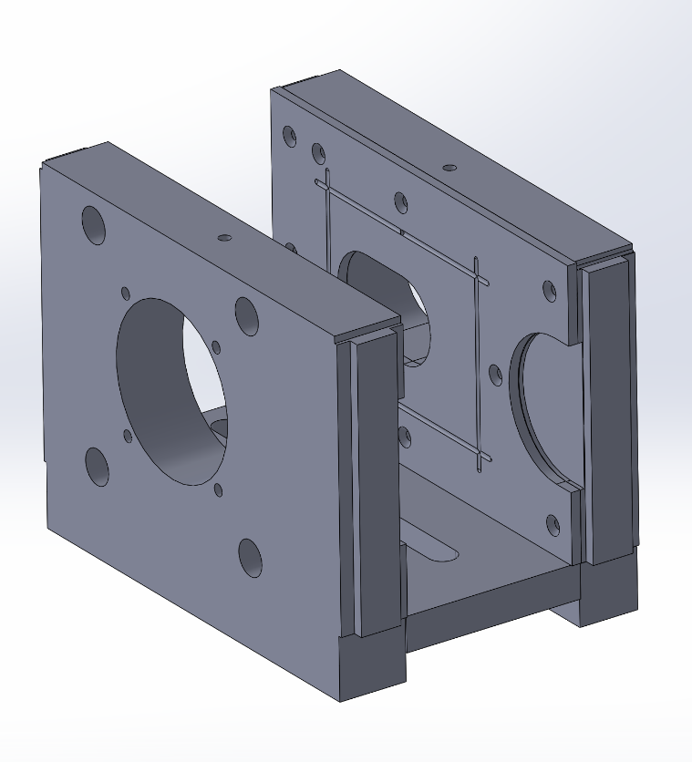
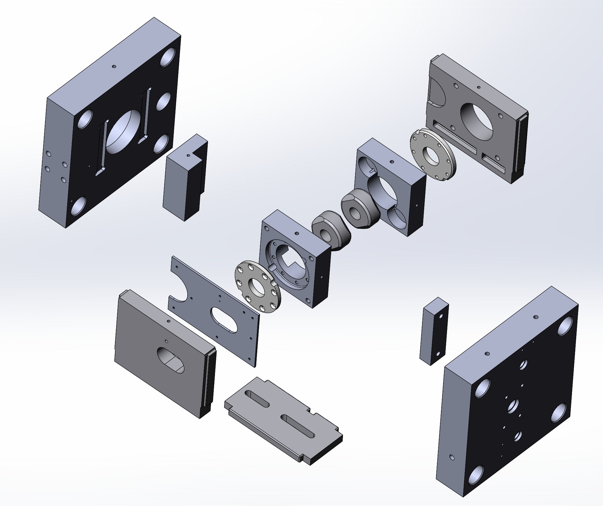

Bar-shear die-box redesign
Redesigned a die-box assembly to address recurring bolt shear failures and improve serviceability.
Implemented redesign

Brief
Recurring bolt shear failures in a bar-shear die-box assembly created reliability and maintenance problems. Service work took 16 hours with the previous arrangement.
My work
Redesigned the die-box plates in CAD, released drawings through PDM, and supported retrofit assembly and follow-up failure investigation.
- Reviewed recurring fastener failures, mating fits, and service access.
- Revised plate geometry and drawings, including features that allow assembly in only one orientation.
- Supported retrofit and investigated holder cracking through drawing review, hardness checks, and a revised stationary support block.
Engineering detail
From CAD release to retrofit
The work included manufacturing drawings, PDM release, vendor drawing updates, machine-fit corrections, and assembly support. Later plate revisions addressed incorrect assembly orientation as well as maintenance access.
Separate holder-cracking investigation
Holder cracking occurred on both the old and revised assemblies. I reviewed drawings and hardness, checked the plate changes, and implemented a revised stationary support block. The February 2026 update recorded four weeks without observed holder cracks; that observation does not establish a permanent fix.
Tracking service life
I arranged a cryogenic-treatment trial for a blade and holder set and wrote the tracking procedure. It calls for keeping the treated set together, recording installation and removal dates, and logging piece counts each shift. The records were intended to support a tool-life comparison; a completed comparison is not documented.
Result
Service time fell from 16 hours to 4 hours: a 75% reduction.